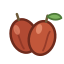
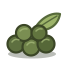
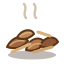
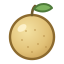

STARLIGHT TEAHOUSE
별빛 찻집
별이 유난히 밝은 밤에만 문을 여는 찻집이 있습니다. 지친 마음을 안고 길을 잃은 손님들이 별빛을 따라 찾아오고, 당신은 이 찻집의 팽주(차를 우리는 주인)가 됩니다. 이곳의 차는 값을 받지 않습니다. 위로와 쉼, 그리고 값없이 주어지는 은혜가 이 게임의 이야기입니다.
어떻게 플레이하나요?
- 손님 맞이 — 찻집 문을 열면 언제나 손님이 먼저 찾아옵니다. 손님이 들려주는 사연을 듣고, 아홉 가지 찻잎 가운데 그 마음에 어울리는 차를 골라 내어 드립니다. 꼭 맞는 차를 드리면 손님의 표정이 편안해지고, 고마움의 표시로 별조각을 남깁니다. 마음이 따뜻해진 손님은 손님 도감에 기록됩니다.
- 찻집 로비 — 손님을 배웅하면 찻집 로비가 열립니다. 다음 손님을 맞이할지, 나를 위한 차를 끓일지, 손님 도감을 펼쳐 볼지 고릅니다.
- 나를 위한 차 끓이기 — 오늘의 내 마음을 편하게 적고, 마시고 싶은 찻잎 하나와 과일 하나를 골라 나만의 차를 블렌딩합니다.
- 팽주의 조언 — 팽주가 당신의 이야기를 읽고, 가장 짙은 마음은 찻잎으로, 그다음 마음은 과일로 표현해 한 잔을 권합니다. 고른 찻잎과 과일이 모두 같으면 꼭 맞는 차를 고른 것이고, 다르면 "캐모마일 딸기차도 좋지만 홍차 배차는 어떨까요?"처럼 다른 한 잔을 권하며 위로의 글귀를 건넵니다.
아홉 가지 열매, 81가지 차
찻집의 재료는 '성령의 아홉 가지 열매'(갈라디아서 5:22–23)에서 모티브를 얻었습니다. 종교와 상관없이 누구나 공감할 수 있는 마음의 언어로 풀었습니다. 열매마다 찻잎 하나와 과일 하나가 짝지어져 있어, 이야기에서 가장 짙은 마음은 찻잎으로, 그다음 마음은 과일로 블렌딩합니다. 차 이름은 "찻잎 과일차" — 찻잎 9가지와 과일 9가지를 엮어 모두 81가지 차가 있습니다. 한 가지 마음이 유난히 짙을 때는 같은 열매의 찻잎과 과일로 우립니다(예: 홍차 딸기차).
- 홍차 · 딸기사랑 · 따뜻하고 붉은 마음
- 백차 · 오렌지희락 · 가볍고 환한 기쁨
- 캐모마일 · 복숭아화평 · 마음을 가라앉히는 부드러움

보이차 · 대추오래 참음 · 오랜 시간 숙성되는 깊이- 루이보스 · 무화과자비 · 감싸 안는 포근함
- 녹차 · 청포도양선 · 맑고 곧은 선함

우롱차 · 석류충성 · 변함없이 단단한 마음

호지차 · 배온유 · 볶아낸 듯 순해진 성품- 말차 · 레몬절제 · 정갈하고 산뜻한 다스림
당신의 이야기는 기기 밖으로 나가지 않아요
'나를 위한 차 끓이기'에 적은 글은 브라우저 안에서 동작하는 작은 언어 분류기(나이브 베이즈)가 읽습니다. 서버로 보내거나 저장하지 않으며, 분석이 끝나면 바로 지워집니다. 별조각과 손님 도감 같은 진행 기록만 이 기기의 브라우저에 저장됩니다.
광고에 대하여
별빛 찻집은 무료입니다. 팽주의 조언을 듣기 전에, 원하는 분만 버튼을 눌러 짧은 보상형 광고를 볼 수 있습니다. 광고가 저절로 재생되거나 게임 화면을 가리는 일은 없으며, 손님을 맞이하는 동안에는 광고가 나오지 않습니다. 광고를 불러올 수 없을 때는 기다리지 않고 바로 조언을 들려드립니다.
조언을 다 들으면 카드 아래에 "오늘의 찻잎, 집에서도 우려 볼까요?" 꼬리표가 나옵니다. 누른 분만 '팽주의 찻장'이 열리고, 그 찻잎을 우리는 법과 함께 쿠팡 파트너스 링크를 볼 수 있습니다. 이 링크로 구매하시면 운영자가 쿠팡으로부터 일정액의 수수료를 받습니다. 사지 않아도 게임의 모든 것을 그대로 즐길 수 있어요.
만든 사람
Studio Nathan(스튜디오 네이선)의 Nathan이 만들었습니다. 그림, 음악, 효과음은 모두 코드로 그리고 연주했습니다.
손님의 사연을 읽는 요령과 블렌딩 규칙은 별빛 찻집 플레이 가이드에, 아홉 열매와 찻잎 이야기는 성령의 아홉 열매, 아홉 잔의 차에 더 자세히 적었습니다.
의견과 문의는 Studio Nathan 문의 페이지로 보내 주세요.